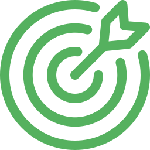
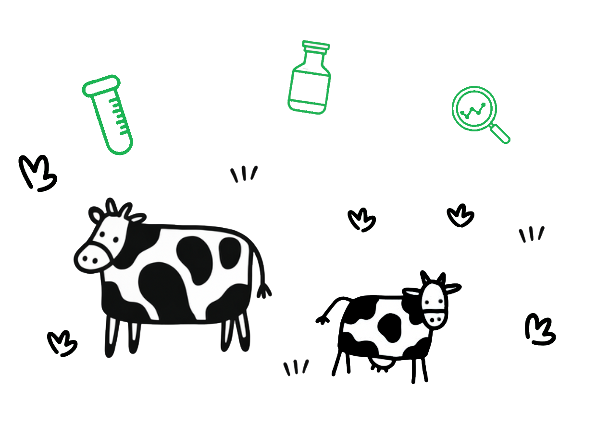
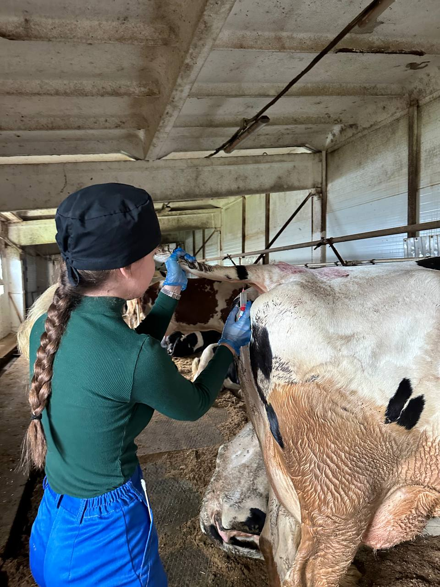
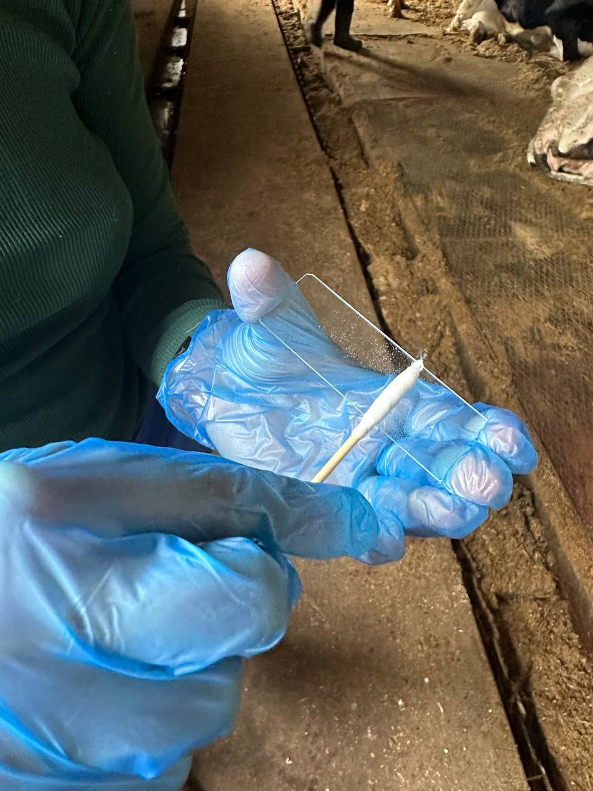
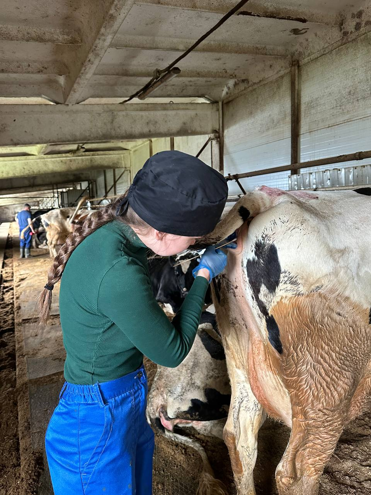

Биология
точности
точности
Никакой магии — только наука и результаты
Результат,
который видно
который видно
Цитология + гормоны = точное осеменение

Точная диагностика и прогнозируемая
репродукция КРС

Определяем оптимальное время осеменения
Повышаем выход телят и снижаем затраты

Интеллектуальная система анализа состояния КРС, которая помогает точно определить оптимальное время осеменения и повысить эффективность хозяйства. Суть разработки заключается в проведении цитологической диагностики (мазков-отпечатков) перед синхронизацией полового цикла, что позволяет определить готовность животных к оплодотворению и снизить использование гормональной терапии.
Сбор и анализ состояния животных на основе данных и наблюдений
Автоматическое распределение животных для повышения результата
Использование алгоритмов для точного прогнозирования
Конкретные действия для повышения эффективности хозяйства
Система сочетает цитологический анализ и контроль гормонов, обеспечивая точную диагностику прямо в хозяйстве.
Среднее время первичного анализа одной пробы
Анализ клеточного состава влагалищной слизи
Контроль гормонов (ELISA, ИФА)
Исследование при увеличении 100×
12 показателей + оценка типов клеток
Без лабораторий — прямо в хозяйстве
Подход к каждому животному
Снижение риска репродуктивных патологий (кисты, гипофункция яичников)
Увеличение процента успешного осеменения
Снижение затрат на лечение и потерь от бесплодия
Диагностика и результат в течение 3–4 часов
Не требует сложного лабораторного оборудования
Решение по каждому животному: осеменение / лечение / дообследование



Свяжитесь с нами для консультации или внедрения системы
ООО "ВЕТЕРИНАРНАЯ-РЕПРОДУКЦИЯ"
634063, Томская область, г Томск, ул Беринга, д. 13/2
Оставьте заявку — мы свяжемся с вами и подберём решение под ваше хозяйство
Связаться с нами